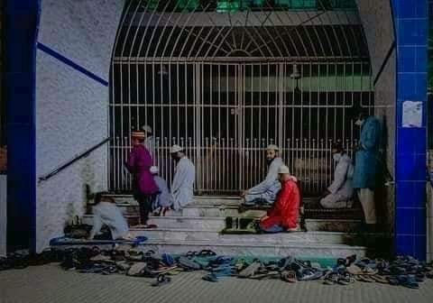

ধৈর্য ধরুন। অতি আবেগের বশে মুসিবত বৃদ্ধি করবেন না
১৪ এপ্রিল, ২০২১
ধৈর্য ধরুন। অতি আবেগের বশে মুসিবত বৃদ্ধি করবেন না।
প্রয়োজনে একাকী তারাবিহ আদায় করুন। বাড়িতে জামাত কায়েম করুন। মসজিদে পড়া ফরজ-ওয়াজিব কিছু না। স্বয়ং তারাবিহ জামাতের সাথে আদায়ের প্রবর্তক সাহাবি উমর রা- জামাতে শরিক হতেন না। শেষ রাতে তারাবিহ পড়তেন- হাদিসের ভাষ্য এটাই প্রমাণ করে।
তাহলে অতি উৎসাহী হয়ে মসজিদের তালা ভেঙে কেন মসজিদে ঢুকতে হবে। এখন তো সীমিত আকারে হলেও জামাত পড়া যাচ্ছে। কাল যদি এরা মসজিদে তালা দিয়ে দেয়, তাহলে প্রতিহত করার ক্ষমতা আপনার আছে?! যদি না থাকে তবে সবর করুন। আর দোয়া অব্যাহত রাখুন।
